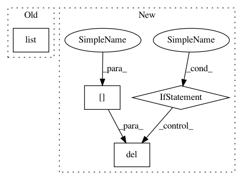

552b063c80f0a9738c3f29f3b20d9530a30d4921,flow/core/vehicles.py,Vehicles,_multi_lane_headways,#Vehicles#Any#,800
Before Change
edges, _ = zip(*edges)
self._ids_by_edge[edge_id] = list(edges)
else:
self._ids_by_edge[edge_id] = list()
def _multi_lane_headways_util(self, veh_id, edge_dict, num_edges, env):
Utility function for _multi_lane_headways(); computes the required
After Change
// sort all lanes in each edge by position
for edge in tot_list:
if edge_dict[edge] is None:
del edge_dict[edge]
else:
for lane in range(max_lanes):
edge_dict[edge][lane].sort(key=lambda x: x[1])
for veh_id in self.get_rl_ids():
// collect the lane leaders, followers, headways, and tailways for
// each vehicle
headways, tailways, leaders, followers = \
In pattern: SUPERPATTERN
Frequency: 3
Non-data size: 4
Instances
Project Name: flow-project/flow
Commit Name: 552b063c80f0a9738c3f29f3b20d9530a30d4921
Time: 2018-02-06
Author: akreidieh@gmail.com
File Name: flow/core/vehicles.py
Class Name: Vehicles
Method Name: _multi_lane_headways
Project Name: ContextLab/hypertools
Commit Name: 529c4bc269f6c3a265d49b97393cbc6ecbcf5f94
Time: 2016-12-22
Author: andrew.heusser@gmail.com
File Name: python/hypertools/plot/plot.py
Class Name:
Method Name: plot
Project Name: ContextLab/hypertools
Commit Name: 7c2673280add4356814a56e5a4253bd959630e95
Time: 2016-12-22
Author: andrew.heusser@gmail.com
File Name: python/hypertools/plot/plot.py
Class Name:
Method Name: plot